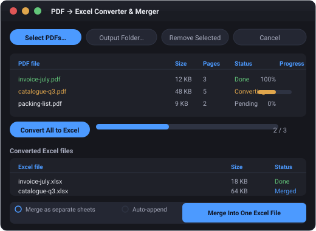

Version 1.0.0
PDF → Excel Converter & Merger
Convert multiple PDFs into Excel workbooks with zero data loss — then merge everything into one file and pull out the columns you care about.
Runs entirely on your machine. No cloud, no uploads, no account.

Everything your PDFs need
Multi-file conversion
Select or drag & drop as many PDFs as you like. Each one becomes its own Excel workbook with per-file progress.
Zero data loss
Tables, free text, line breaks, leading zeros and embedded images all survive — nothing is silently dropped.
Smart tables
Ruled tables are extracted accurately, and tables spanning multiple pages are re-joined into a single worksheet.
Merge into one workbook
Combine every converted file into a single .xlsx — as separate sheets, or by auto-appending matching tables.
Extract the columns you need
Grab Material Code, Item Description, EAN No., Quantity and Unit Base Cost into one consolidated spreadsheet.
Handles real-world PDFs
Password-protected PDFs, unicode filenames, scanned pages and image-heavy documents are all supported.
Screenshots
Replace the images in web/assets/ with real screenshots before publishing.
System requirements
Windows (installer)
- Windows 10 or 11, 64-bit
- No Python required
- ~200 MB free disk space
macOS / Linux (source)
- Python 3.10+
- Run from source — see the README
- Drag & drop optional (tkinterdnd2)
Frequently asked
Is my data uploaded anywhere?
No. Everything is processed locally on your machine. The app makes no network calls.
Which formats are supported?
PDF input, .xlsx output. Ruled tables, free text, and embedded images are all handled.
What about scanned PDFs?
Scanned pages are embedded as pictures with a clear notice. OCR is not bundled, so run OCR on the PDF first if you need searchable text.
Do borderless tables convert?
Tables without ruled lines are preserved as plain text on the Text & Images sheet rather than being guessed — nothing is lost, nothing is invented.
Download for Windows
Grab the installer, run it, and convert your first PDF in under a minute.
Download for WindowsInstaller is built with PyInstaller. See the README for build instructions and a guided Setup.exe option.